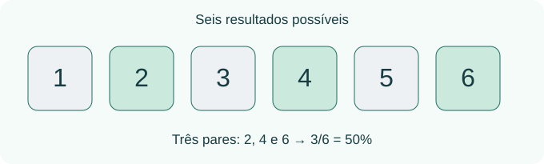
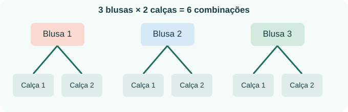

Preparação para o Vestibulinho ETEC · Módulo 06. Estude os conceitos, acompanhe os exemplos linha por linha e faça a fixação antes de passar ao próximo tópico.
Leia título, eixos, legenda, escala e unidade antes de calcular. Gráficos de barras comparam categorias, linhas mostram evolução e setores mostram partes do total. Some as categorias para achar o total.
Um círculo completo equivale a 360°. Cada setor tem ângulo proporcional à frequência da categoria. Para obter a porcentagem, divida a frequência pelo total.
θ = ftotal × 360°
Um quarto de círculo representa 25% e tem ângulo central de 90°.
Exemplo resolvido
Em uma turma de 40 alunos, 10 usam bicicleta. Qual o ângulo do setor?
10 ÷ 40 = 1/4 = 0,25.
0,25 × 360° = 90°.
O setor ocupa 25%.
Cuidado: O ângulo não é igual ao número percentual.
Exercício de fixação
Fixação 02 · autoral
De 200 pessoas, 50 preferem ônibus. Qual o ângulo do setor?
Confira também o desenvolvimento no gabarito; respostas em formatos equivalentes podem exigir conferência manual.
Some todos os valores e divida pela quantidade de valores, inclusive zeros. Para descobrir um valor desconhecido a partir da média, multiplique a média pela quantidade.
M = soma dos valoresquantidade
Exemplo resolvido
Notas 6, 7, 8 e 9. Determine a média.
6 + 7 + 8 + 9 = 30.
Quantidade = 4.
M = 30 ÷ 4 = 7,5.
Cuidado: Não divida pelo maior valor.
Exercício de fixação
Fixação 03 · autoral
Um aluno teve média 7 em três provas. As duas primeiras foram 6 e 8. Qual a terceira?
Confira também o desenvolvimento no gabarito; respostas em formatos equivalentes podem exigir conferência manual.
Moda é o valor mais frequente. Mediana é o centro dos dados ordenados; com quantidade par, calcule a média dos dois centrais. Amplitude é máximo menos mínimo.
Quando resultados são equiprováveis, a probabilidade é favoráveis/possíveis. Varia de zero (impossível) a um (certo). O complemento é a probabilidade de não ocorrer.
P(A) = favoráveispossíveis; P(não A) = 1 − P(A)

Resultados de um dado equilibrado; os pares estão destacados.
Exemplo resolvido
Dado equilibrado: probabilidade de obter número par e de não obter par.
Possíveis: 1, 2, 3, 4, 5, 6.
Favoráveis: 2, 4, 6, ou seja, 3.
P = 3/6 = 1/2 = 50%.
Complemento = 1 − 0,5 = 0,5.
Cuidado: Não conte resultados que não atendem ao pedido.
Exercício de fixação
Fixação 06 · autoral
Urna: 8 pretas, 6 brancas e 2 vermelhas. Probabilidade de branca?
Confira também o desenvolvimento no gabarito; respostas em formatos equivalentes podem exigir conferência manual.
Para eventos independentes, multiplique probabilidades. Sem reposição, o total diminui e a quantidade favorável pode mudar; use a probabilidade condicional da segunda retirada.
P(A e B) = P(A) × P(B dado A)
Exemplo resolvido
Caixa com 5 vermelhas e 3 azuis. Duas retiradas sem reposição: ambas vermelhas.
Primeira: 5/8.
Segunda, se a primeira foi vermelha: 4/7.
P = 58 × 47 = 2056.
P = 5/14 ≈ 35,71%.
Cuidado: Sem reposição não repita automaticamente o denominador inicial.
Exercício de fixação
Fixação 07 · autoral
Lance uma moeda equilibrada duas vezes. Probabilidade de duas caras?
Confira também o desenvolvimento no gabarito; respostas em formatos equivalentes podem exigir conferência manual.
Se uma escolha pode ser feita de m maneiras e para cada uma há n escolhas seguintes, multiplique. Em senhas sem repetição, cada posição disponível reduz o número de opções.
Total = n₁ × n₂ × … × nk

Árvore de possibilidades para formar conjuntos de roupa.
Exemplo resolvido
Senha de 3 algarismos distintos de 0 a 9, podendo começar com zero.
1ª posição: 10 opções.
2ª posição: 9 opções.
3ª posição: 8 opções.
10 × 9 × 8 = 720.
Cuidado: Senha pode começar com zero se o enunciado permitir.
Exercício de fixação
Fixação 08 · autoral
Um restaurante oferece 4 pratos, 3 bebidas e 2 sobremesas. Quantas refeições?
Confira também o desenvolvimento no gabarito; respostas em formatos equivalentes podem exigir conferência manual.
Fatorial é o produto de inteiros positivos até n; 0! = 1. Permutação de n objetos distintos usa n!. Combinação escolhe p objetos distintos entre n quando a ordem não importa.
n! = n × (n−1) × … × 1; C(n,p) = n!p!(n−p)!
Exemplo resolvido
Cinco pessoas em fila e escolha de dois representantes dentre cinco.
Fila: 5! = 5 × 4 × 3 × 2 × 1 = 120.
Representantes: C(5,2) = 5!/(2!3!).
C = (5 × 4)/2 = 10.
Cuidado: Escolher uma dupla não é o mesmo que ordenar duas pessoas.
Exercício de fixação
Fixação 09 · autoral
Quantas filas de quatro pessoas distintas? E quantas duplas de cinco pessoas?
Confira também o desenvolvimento no gabarito; respostas em formatos equivalentes podem exigir conferência manual.
🔽 Ver gabarito comentado
Resposta: 24 e 10
4! = 4 × 3 × 2 × 1 = 24.
C(5,2) = (5 × 4)/2 = 10.
Continue praticando
REVISÃO
Resolva as questões reais e complementares do módulo e confira cada etapa da resolução.